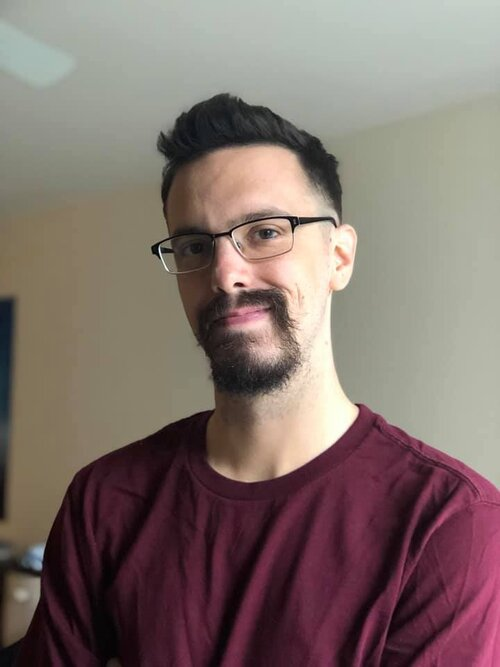

My Philosophy
“Ambition is not what one would do, but what one does, for ambition without action is fantasy.”
When it comes to most ambitions, this quote falls true. However, what about those of us whose ambition is fantasy? For me, this is who I am. I am a designer who lives in fantasy. Whether it is the graphical designs I produce, the characters I portray on stage, or the stories I envision in games, fantasy is my reality.
I am a user experience designer that enjoys thinking outside the box for unique and engaging solutions. My philosophy to user experience design includes the following points:
There’s no such thing as a dumb question. I enjoy hearing other people’s stories and learning as much as I can. You can't really learn unless you ask and even the smallest question can give you more information than some of the more obvious ones. So, I don't hold back when asking for more detail.
Celebrate success; Embrace failure. We should all be happy when a project is successful, but we shouldn't let failure deter us from our goal. In fact, I have found that some of my biggest failures helped make the product, and myself, even stronger. I'm not afraid to fail and I'm more excited about what I will learn.
You can’t spell functional without “fun”. I'm a very outgoing person who doesn't try to take life too seriously. I feel by injecting a little bit of that into my work makes the user experience even more enjoyable. So, why not have a little fun with your design; it doesn't have to be all business all the time.
My Process
Research
I am driven by other people’s excitement for a product or feature. Additionally, I love to hear people’s stories and what their likes, ambitions, and ideas are. My process always begins with user research. This includes user interviews and surveys to gauge the potential user’s current frustrations, inspirations, and needs for a system.
Define
From my research, I can narrow down and define the problem. Part of this process includes creating user personas based off of the data I collected. I also use these personas to create journey maps and storyboards for both the current and ideal process.
Design
We live in a digitized world, but my design process always begins with trusty pencil and paper sketches. Those sketches are then converted digitally. These become lo-fi designs and prototypes (currently utilizing Adobe XD) which allows for initial testing with users. These designs are iterated on for fidelity until a proper look and feel is reached.
Test
This is where I find one of the most important parts in my process. Now it’s time to get what I designed into hands of potential users. My preference is for my testing to be in-person, as I feel the emotional reactions I get from user tests can be even more useful than any usage data or survey responses. I aim for diversity in my testers, from different backgrounds and experiences. The results from my testing will help inform any design changes and adjustments in direction.
Launch
While many see the launch of a product see it as “done”, I never do. The launch of a product for me gets even more test data to use to continue to iterate and improve the product further.
Iterate
I am always open to suggestions, improvements, and recommendations, so my designs are always evolving. My test results continue to inform designs and I’m never “done” with a project. I continue to return to the design step with new data and ideas to improve my work even further constantly.
My Life
Outside of work and design, my hobbies include theater and gaming. I’ve been involved in theater since high school and have loved it ever since. I’ve taken on many roles both on and off stage, but my most common role has been that of the Stage Manager. It’s been a great escape and my experiences are what have led to my Madison Audition Hub project.
I also enjoy games, including video games, table-top and board games, and online social strategy games. I’m a huge fan of Dungeons and Dragons and enjoy the story crafting that comes with it. I enjoy the strategy and escape from reality they give, along with the connection between people they can give.